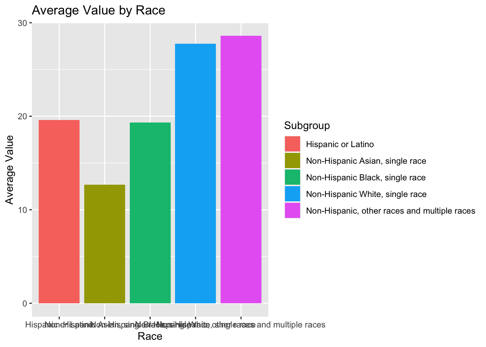
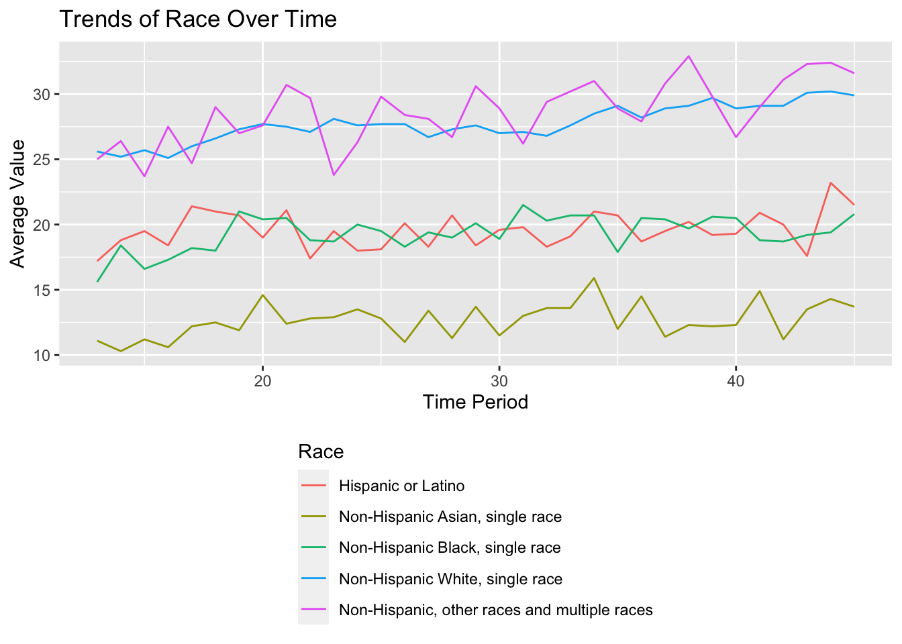
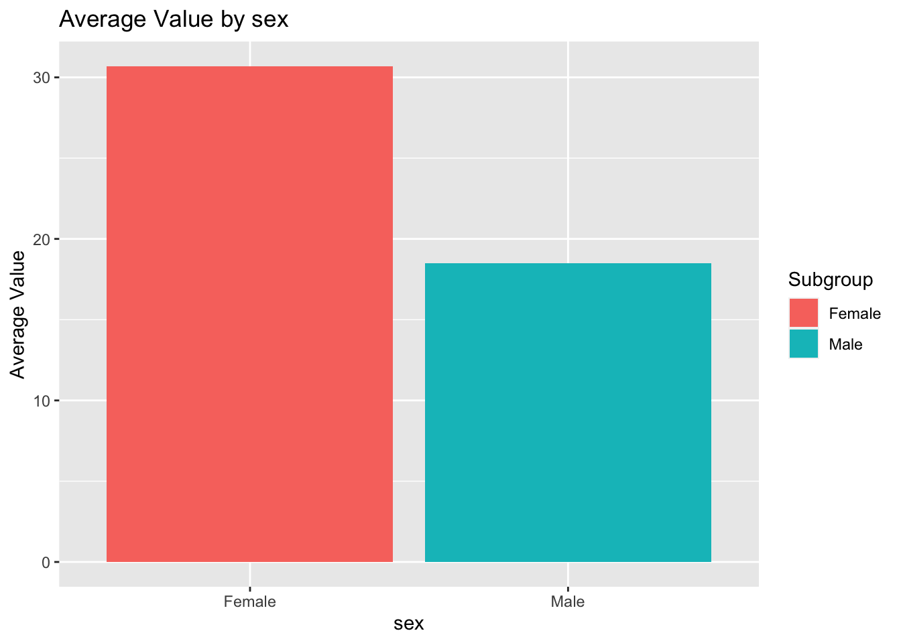
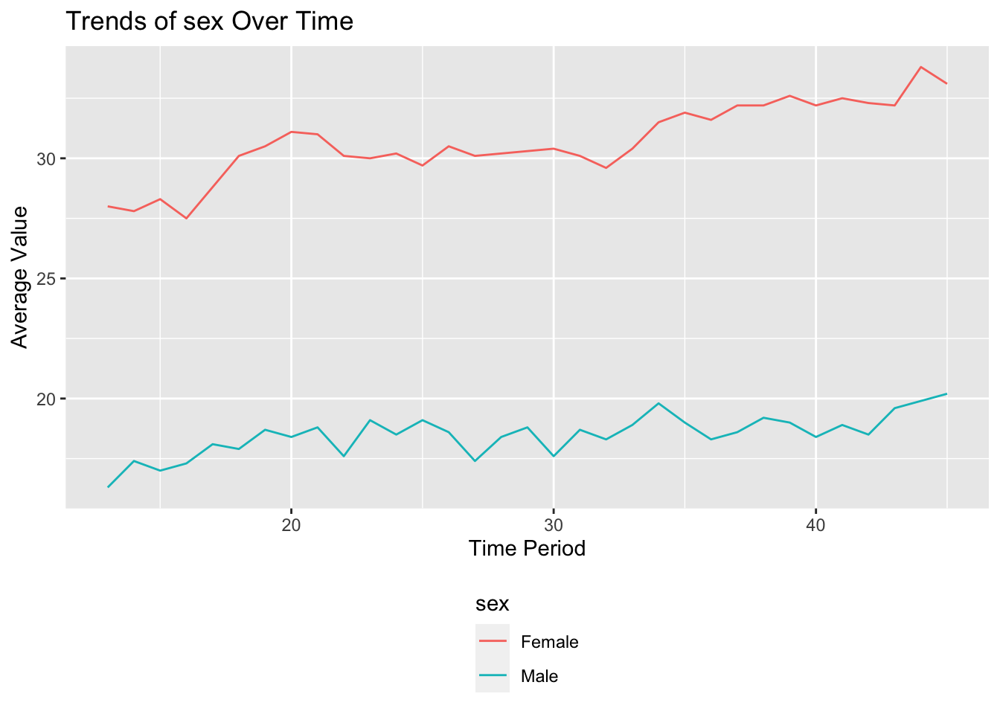
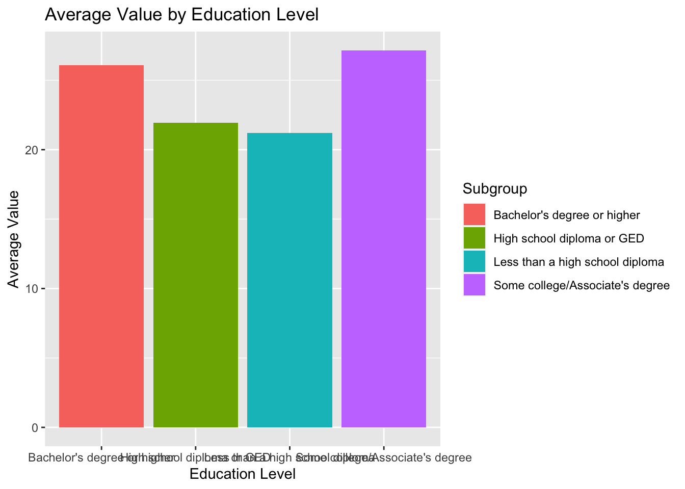
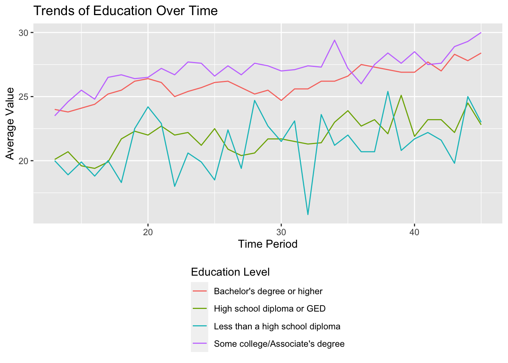
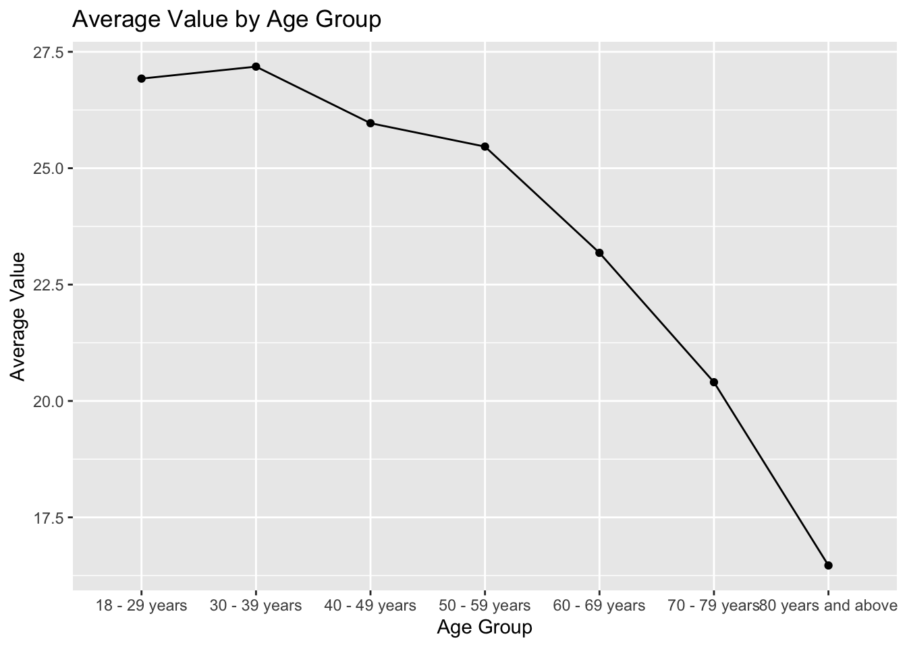
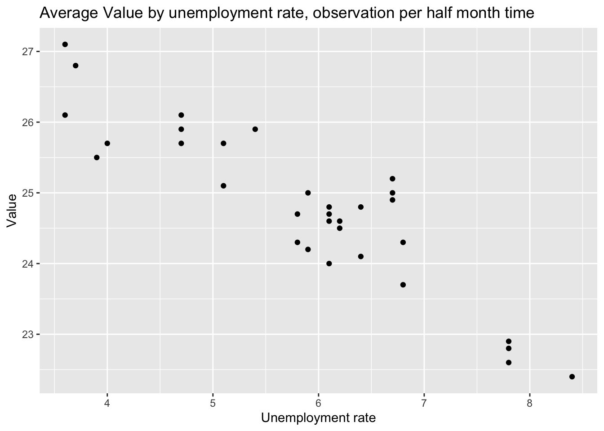
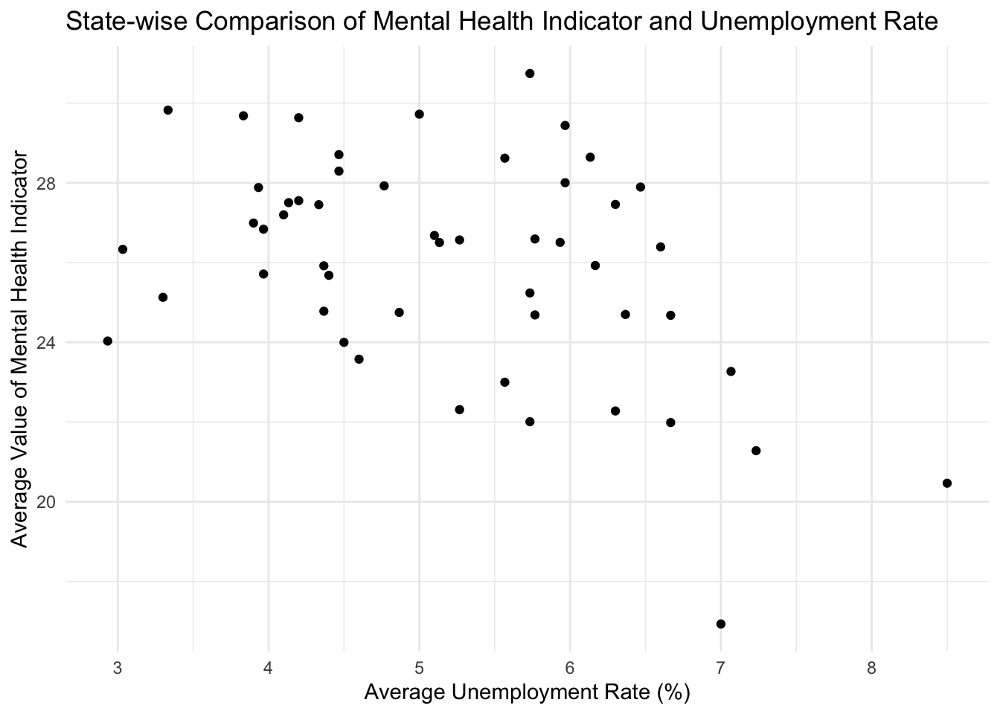
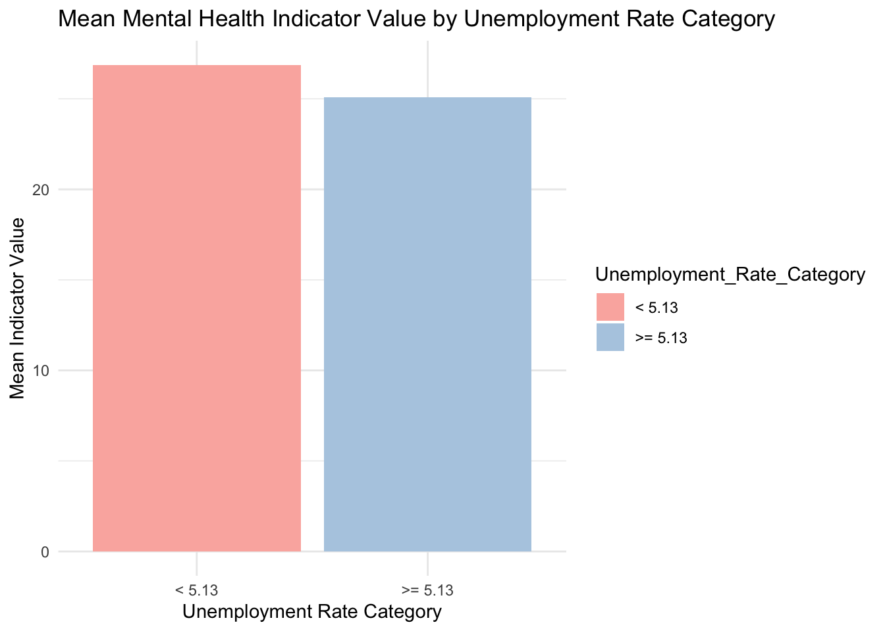

Attaching package: 'dplyr'The following objects are masked from 'package:stats':
filter, lagThe following objects are masked from 'package:base':
intersect, setdiff, setequal, union## Investigating Mental Health as a Virtue of the Pandemic and Other Demographic Factors
The pandemic placed many burdens on our society. People were socially isolated, and financially burdened, due to unemployment as well as reduced overall income. We also know that these disproportionately affected people due to their demographic factors, i.e., the state that they live in or the race that they are. All of these factors collectively therefore had an impact on people’s mental health. This study therefore set out to investigate the impact of the pandemic on the
We believe that as unemployment increases, and income decreases, due to the pandemic, mental health scores for anxiety and depression will increase, and so will seeking mental health resources. This is why we compare the data from 2020 to 2022 to see if these got better in a post-lockdown world.
We have brought together data from the CDC, regarding mental health, and data on unemployment, education levels and GDP from the U.S. Bureau of Labor Statistics. By analyzing these variables, we hope to be able to understand variables that impacted people’s mental health during the COVID-19 pandemic. Below, we have graphed each demographic variable with the average percent of people who required mental health intervention (as indicated by the variable “Took Prescription Medication for Mental Health And/Or Received Counseling or Therapy, Last 4 Weeks”).
The x-value “Time Period” is a measure of 2-week phases, therefore 20 is 40 weeks from when they first started collecting data. The time period spans across an overall 90 week period. Thus, the first data obtain is on Aug 31, 2020, time period 30 is May 24, 2021, and the time data is on May 9, 2022. We can see for all indicator, the average value of the mental problem is increase along the time.
For all the following analyze, we are focus on the indicator “Took Prescription Medication for Mental Health And/Or Received Counseling or Therapy, Last 4 Weeks”
Attaching package: 'dplyr'The following objects are masked from 'package:stats':
filter, lagThe following objects are masked from 'package:base':
intersect, setdiff, setequal, unionAdding missing grouping variables: `Subgroup`| Variable | Min | Max | Mean |
|---|---|---|---|
| Hispanic or Latino along time | 17.20000 | 23.20000 | 19.58182 |
| Non-Hispanic Asian, single race along time | 10.30000 | 15.90000 | 12.66970 |
| Non-Hispanic Black, single race along time | 15.60000 | 21.50000 | 19.34545 |
| Non-Hispanic White, single race along time | 25.10000 | 30.20000 | 27.75152 |
| Non-Hispanic, other races and multiple races along time | 23.70000 | 32.90000 | 28.60909 |
| Female along time | 27.50000 | 33.80000 | 30.69091 |
| Male along time | 16.30000 | 20.20000 | 18.49394 |
| Bachelor’s degree or higher along time | 23.80000 | 28.40000 | 26.06970 |
| High school diploma or GED along time | 19.40000 | 25.10000 | 21.92727 |
| Less than a high school diploma along time | 15.80000 | 25.40000 | 21.20606 |
| Some college/Associate’s degree along time | 23.50000 | 30.00000 | 27.15455 |
| age | 16.46667 | 27.18182 | 23.65541 |
| state | 16.93030 | 30.74242 | 25.95799 |


There is a difference in the average mental health scores between the races. From this graph, one case see that the race with the lowest mental health scores (engagement with mental health interventions), is Asian. It is then followed by Black, then Hispanic or Latino. And the races with the highest mental health scores are White and other race or multiple races. If you look at these values across time the order of these races in terms of mental health scores stay the same, but there are large variations among the Asian participants and the other races or multiple races. These two groups, as well as White participants, seem to have an increase in their mental health scores across time.


There is a difference in the average mental health values between males and females. Across, time this difference remains equally prominent with females overall having higher mental health scores than males. This suggests that more females than males used mental health services. However, much like the other variables, there was a slight increase across time


It appears that there is some variation in use of mental health interventions across education levels. It appears people with greater education levels seem to have poorer mental health, however this could be correlated with age or other more significant factors. Interestingly, there seems to be great variation in the correlation between education levels and mental health across the 90-week period, as indicated by the second graph. But, in general, the percentage of people who require mental health intervention increases over time.

As one can see, there is a clear negative correlation between the percentage of people who required mental health intervention and age group, indicating as age increased the need for mental health resources (and the impact of mental health) decreased. One could say perhaps the younger population was more impacted by the social isolation that the COVID-19 posed.
by time across the USA:
Attaching package: 'lubridate'The following objects are masked from 'package:base':
date, intersect, setdiff, unionWarning: Removed 1 rows containing missing values (`geom_point()`).
The unemployment rate by time vs the value shows a clear trend that when the unemployment rate is high, the mental health of whole country seems to be better.
By state, average of all time:


The unemployment rate by state vs the value also shows a trend that the lower unemployment rate in fact increase the mental health problem. The bar chart is divided by the median of the unemployment rate (5.5%), it also shows that the higher unemployment rate usually indicate a better mental health
Please refer to the data analysis page for our overall findings.
This comes from the file big_picture.Rmd.
Think of this page as your 538/Upshot style article. This means that you should try to tell a story through the data and your analysis. Read articles from those sites and similar sites to get a feeling for what they are like. Try to write in the style of a news or popular article. Importantly, this pge should be geared towards the general public. You shouldn’t assume the reader understands how to interpret a linear regression. Focus on interpretation and visualizations.
You will
Note: This page should have no code visible, i.e. use #| echo: FALSE.
You will also be required to make an interactive dashboard like this one.
Your Big Data page should include a link to an interactive dashboard. The dashboard should be created either using Shiny or FlexDashboard (or another tool with professor’s approval). This interactive component should in some way support your thesis from your big picture page. Good interactives often provide both high-level understanding of the data while allowing a user to investigate specific scenarios, observations, subgroups, etc.
Make a video recording (probably using Zoom) demonstrating your interactive components. You should provide a quick explanation of your data and demonstrate some of the conclusions from your EDA. This video should be no longer than 4 minutes. Include a link to your video (and password if needed) in your README.md file on your Github repository. You are not required to provide a link on the website. This can be presented by any subset of the team members.
Finally, here are important things to keep in mind for the rest of the site.
The main title of your page is informative. Each post has an author/description/informative title. All lab required posts are present. Each page (including the home page) has a nice featured image associated with it. Your about page is up to date and clean. You have removed the generic posts from the initial site template.